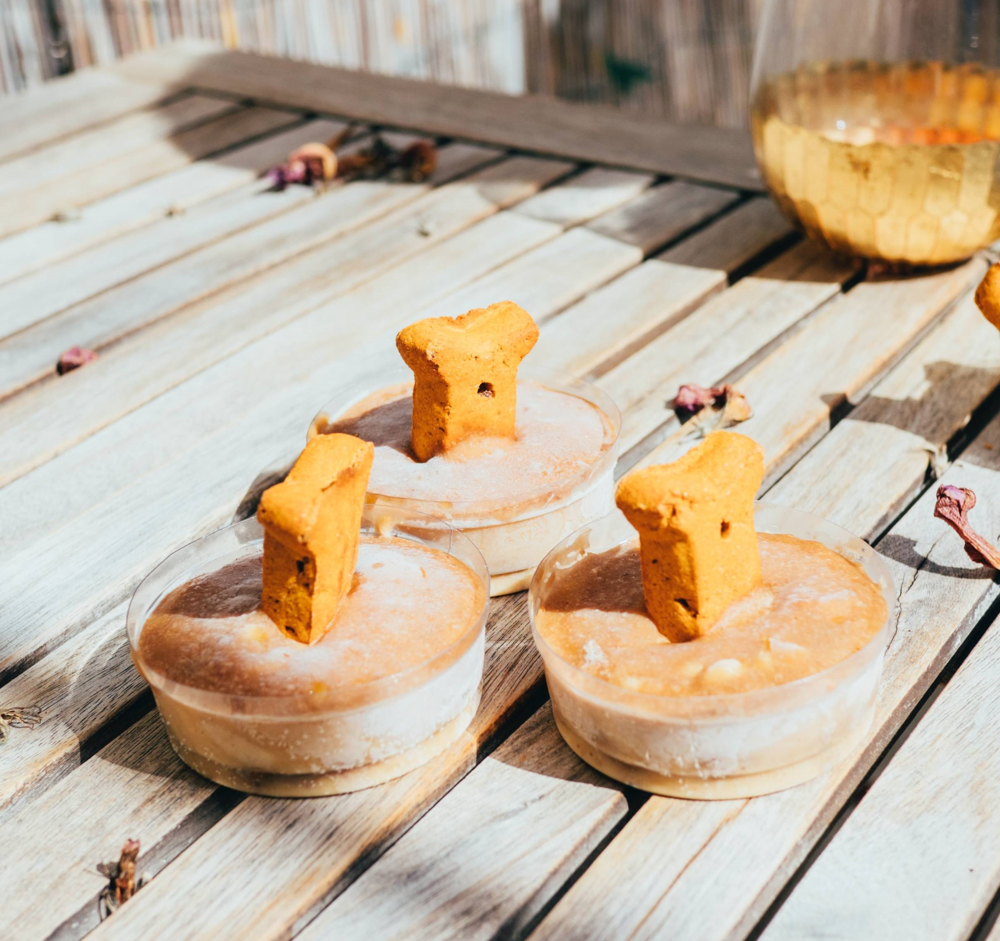

RECIPE: Your dog will fall in love with these homemade vegan treats!
While some people took on baking as their newest pandemic hobbies, we from the K9 Sisters have taken on baking dog treats that are also edible for humans. Making your own dog treats is a great way to avoid industrialized cookies with weird ingredients, and to make friendly and healthy cookies catered to your dog’s food preferences and potential allergies.
In the last year we have tried almost 20 recipes of dog treats, ranging from peanut butter to carrots, but this one is our ultimate favorite. Dont miss the chance and check our this latest post on how to make this 4 ingredient only homemade vegan dog treat with pumpkin and peanut butter.
For this recipe you will need:
- 120g of Peanut Butter
- 200g of Pumpkin Puree
- 20g of Flax Seeds
- 200g of Oats
Preparation steps:
- Pre heat the oven to 200ºC
- Add all ingredients into a food processor and blend it for 1 minute
- Roll out the mixture with a wodden rolling pin and cut your treats in your favourite shape (just make sure they are all more or less the same size)
- Bake them in the over for 30 minutes
- Let them cool down, and save them for up o 2 weeks in the fridge or freeze them for up to 2 months